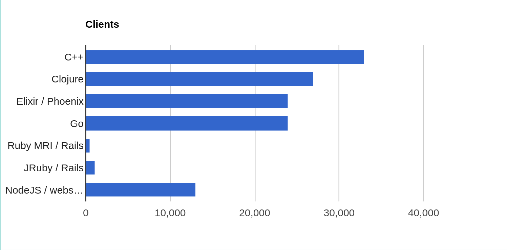

Clojure
Programmation fonctionnelle pragmatique
Plan
Pourquoi Clojure?
Syntaxe
Programmation fonctionnelle
Concurrence
Qu'est-ce que Clojure?
Dialecte de Lisp
Langage fonctionnel
Accent sur l'immutabilité et la concurrence
Pragmatique
Fill the blank
"A lot of the best programmers and the most productive programmers I know are writing everything in _____ and swearing by it, and then just producing ridiculously sophisticated things in a very short time. And that programmer productivity matters."
-Adrian Cockcroft, Netflix
Pourquoi Clojure?
http://blog.cognitect.com/blog/2015/6/30/walmart-runs-clojure-at-scale"How did Walmart's eReceipts team of 8 developers build a system to process and integrate every purchase at Walmart's 5000+ stores, including online and mobile data? Simple - they used Clojure"
"Clojure uses anywhere from 5 to 10 times less code than other programming languages, speeding development time, reducing the instances of bugs, and lowering maintenance costs."
Pourquoi Clojure?
Benchmark websocket- nombre de connections concurrentes
Types atomiques
; Nombres
1
1.3
1.234M
22/7
; String, char
"toto"
\c
; Symbol, keyword
map
+
:toto
; Boolean
true
false
; Null
nil
;Regex
#"a*b"
Structures de données
; Liste
'(1 2 3 4 5)
; Vecteur
[1 2 3 4 5]
; Map
{:a 5, :b 3}
{:a 5 :b 3}
; Set
#{1 2 3 4 5}
; On peut tout "nester"
{:some-set #{1 2 3}
:some-map {:a 23
:b 21}
:some-vec [4 3 23]}
Syntaxe
On vient de la voir
LISP == LISt Processing
Notation préfixe: (func arg1 arg2 arg3...)
Évaluation de listes
(+ 1 2 3 4)
(type '+)
(+ (* 3 5) (- 10 3))
Immutabilité
Structures de données VanillaJS
var evil_do_sum = function(some_array) {
var sum = 0;
for(var i = 0; i < some_array.length; i++) {
sum += some_array[i];
console.log(i)
some_array[i] = 0;
}
return sum;
};
var a = [1, 2, 3, 4, 5];
var sum = evil_do_sum(a);
"La somme de " + a + " est " + sum;
Imaginez du code non trivial (ex. transaction BD). On doit tout encapsuler.
Memento

Immutabilité
(def a {:info "confidential"
:jokes "not allowed"})
(def do-stuff
(fn [arg]
(assoc arg :your-mom "LOL")))
(defn do-stuff-2
[]
(assoc a :your-mom "LOL"))
(let [foo (do-stuff a)
bar (do-stuff-2)]
[foo bar a])
a n'est jamais modifié
Fonction pure
N'interagit pas avec le monde extérieur
Entrée -> Sortie
Toujours le même résultat pour une même entrée
Facile à tester (sans Mocks!)
Fonction d'ordre supérieur
Prend en entrée une fonction

Fonction d'ordre supérieur
Prend en entrée une fonction
(map (fn [a] (inc a))
[1 2 3])
(filter (fn [x] (= x 2))
[1 2 3 2 1 1 2 2])
(reduce (fn [sum x] (+ sum x))
0
[1 2 3 4 5 6])
Exemple
Transformation de données
Sélectionner les utilisateurs qui ont une adresse gmail
Incrémenter leur karma de 100
Mettre leur nom en majuscule
Retourner uniquement les noms et leur karma
Exemple
(require '[clojure.string :as s])
(def users [{:name "toTo"
:email "toto@gmail.com"
:karma 23}
{:name "tata"
:email "tata@yahoo.com"
:karma 12}
{:name "foO"
:email "foo@gmail.com"
:karma 42}])
(defn is-gmail?
[email]
(re-matches #".*@gmail\.com" email))
(defn increment-karma
[karma]
(+ karma 100))
(->> users
(filter #(is-gmail? (:email %)))
(map #(update % :karma increment-karma))
(map #(update % :name s/upper-case))
(mapv #(select-keys % [:name :karma])))
Interlude - Macro
Rappel - LISt Processing, code as data
Macro: code qui modifie une liste de code avant l'évaluation
(Pas au niveau du fichier texte)
But: Métaprogrammation, améliorer la lisibilité
(->> [1 2 3 4 5]
(map inc)
(filter odd?)
(reduce +))
(macroexpand '(->> [1 2 3 4 5]
(map inc)
(filter odd?)
(reduce +)))
Concurrence
Fonctions pures -> pas d'effet de bord -> parralellisable
Pas d'effet de bord -> programme qui ne fait rien :(
Comment gérer l'état du système?
STM - Software Transactional Memory
core.async - modèle de concurrence à la Go
STM
Gérer la mutation comme une transaction atomique
Pas de locks
(def state (atom []))
; Thread 1
(swap! state conj {:a 1, :b 3})
; Thread 2
(swap! state conj {:c 2, :d 4})
(deref state) ; deref retourne une valeur immuable
core.async
Programmation async par channels
(defn producer
[out-chan]
(go
(loop [seconds 1]
(<! (timeout 1000))
(print "waited" seconds "seconds")
(>! out-chan seconds)
(recur (inc seconds)))))
; Ailleurs dans le systême
(defn consumer
[]
(let [com-channel (chan)
producer-closed (producer com-channel)]
(go
(loop [state {:time 0}]
; "Parking" du thread, attente d'un message
(let [new-state (<! com-channel)]
; Récursion avec le nouvel état
(recur new-state))))))
Pour en savoir plus

/